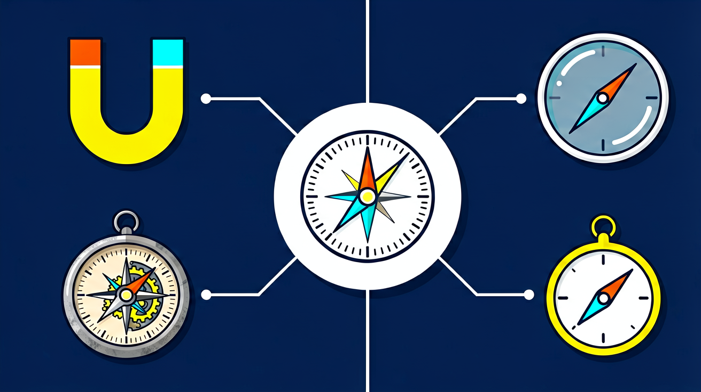
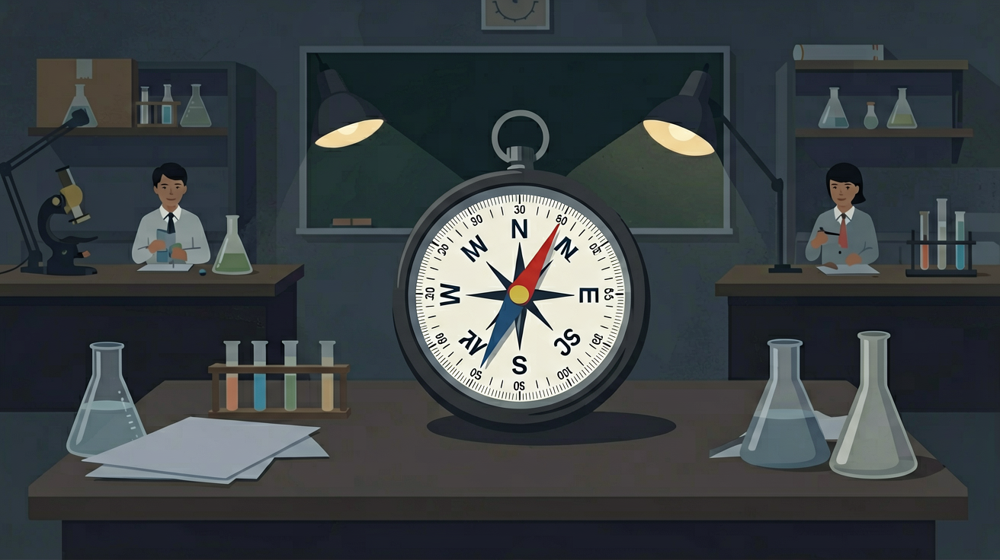
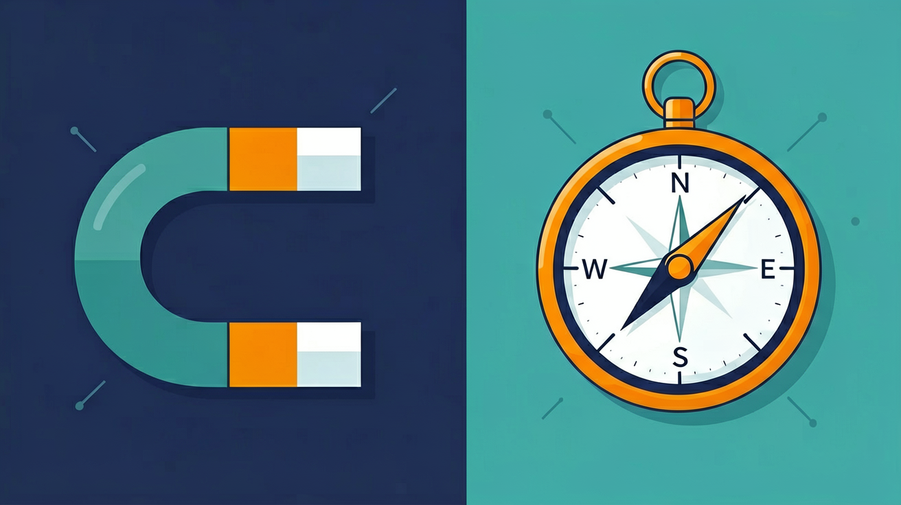

🎯 能说出磁铁吸引铁钴镍的性质及磁场方向判断方法
🎯 能判断磁极相互作用规律并用磁感线描述磁场
🎯 能分析简单磁化现象并解释指南针工作原理
❓ 为什么磁铁能吸铁钉却不能吸铜片？
❓ 同名磁极相斥时，中间的磁场去哪了？
❓ 指南针的N极到底指向地理南极还是北极？
学完这一课，这些问题你都能自信地回答。
And：学生见过磁铁吸铁钉
But：不明白为什么只有铁类物质能被吸
Therefore：理解磁性的本质是磁畴定向排列
磁铁内部有无数个微型磁体叫磁畴。当磁畴方向杂乱时磁性抵消（如普通铁钉）；当磁畴朝同一方向排列时（如磁铁），就表现出磁性。例如用磁铁摩擦铁钉30次后，铁钉能吸起5枚大头针，说明铁钉被磁化了。
🌍 冰箱贴能吸在门上是因为门板里有铁质材料。如果换成铝合金门，冰箱贴就吸不住了。
下列哪种物品一定能被磁铁吸引？
磁体周围存在磁场，磁场对放入其中的磁体/某些金属有力的作用。磁感线描述磁场方向与疏密。
指南针指南北。
以为只有磁铁接触才有力；磁感线是真实曲线。
磁性→磁场→磁感线→地磁场。
能吸引铁钴镍等
磁体周围的磁场
形象描述磁场

磁体两端磁性最强的部分叫磁极，任何磁体都有南北两极，同名磁极相互排斥、异名磁极相互吸引。磁体周围存在磁场，磁场对放入其中的磁体有力的作用。磁感线是为了形象描述磁场而画的假想曲线，在磁体外部从 N 极出发回到 S 极。
磁场方向规定为小磁针静止时 N 极所指的方向。地球本身是一个大磁体，地磁北极在地理南极附近，因此指南针的 N 极指向地理北方。
常见误区：常见误区是认为磁感线是真实存在的曲线，或把地磁南北极与地理南北极完全等同。
关于磁感线，下列说法正确的是？
指南针静止时 N 极指向地理北方，这说明？
勾选你已掌握的条目。
And：知道磁铁周围有磁场
But：看不见摸不着难以测量
Therefore：学习用铁屑可视化磁场
磁场虽然无形，但可以通过铁屑排列显现。在条形磁铁上方放玻璃板，撒100g铁屑轻敲，铁屑会形成从N极到S极的弧形线。磁极附近铁屑密集（约3mm间距），中间稀疏（约1cm间距），说明磁场强度不同。
🌍 修车师傅用磁铁棒在机油里吸铁屑，通过铁屑数量判断发动机磨损程度。
观察右图铁屑分布，哪个位置磁场最强？
And：感受过磁铁相吸相斥
But：不知道力的大小如何量化
Therefore：引入磁力计测量数值
用磁力计可以精确测量磁力大小。例如两块N极相对的磁铁，距离5cm时斥力为0.2N，靠近到2cm时增至0.8N。通过改变磁铁间距、角度等参数，发现磁力与距离平方成反比。
🌍 磁悬浮列车通过调节电磁铁电流大小（相当于改变磁力）来控制悬浮高度。
两磁铁N极距离从4cm变为2cm，斥力如何变化？
And：知道磁力受多种因素影响
But：不会设计对比实验
Therefore：掌握单一变量法研究磁现象
研究磁力影响因素时要控制变量。比如验证磁铁形状的影响：用重量相同的条形（10cm长）和蹄形磁铁，在相同距离（3cm）吸同一铁块，测量发现蹄形磁铁吸力大0.5N，说明磁极集中能增强磁性。
🌍 耳机磁铁做成环形，能让磁场更集中提高发声效率。
研究温度对磁力影响时，哪组操作正确？
【升学题】关于磁感线描述正确的是？
【迁移题】冰箱门磁条的工作原理是？
【实验题】用磁铁摩擦钢针时，应？

磁感线是
铁钉被磁铁吸起说明
✅ 演示铝罐不被吸引但铁钉被吸
💡 混淆重力与磁力的作用机制
✅ 展示地磁南极实际位于地理北极附近
💡 未区分地理极与地磁极的对应关系
口诀：铁钴镍才听话，同名相斥异名拉
类比：磁感线像蒲公英的绒毛，从N极出发回到S极
💡 移动磁铁观察感应与磁场相关现象，建立磁场直觉。
外链：https://phet.colorado.edu/sims/html/faradays-law/latest/faradays-law_zh_CN.html
磁感线从磁体外部
指南针指向大致
两磁铁异名磁极靠近
用三句话说明磁现象最重要的一条规律，并举一例。